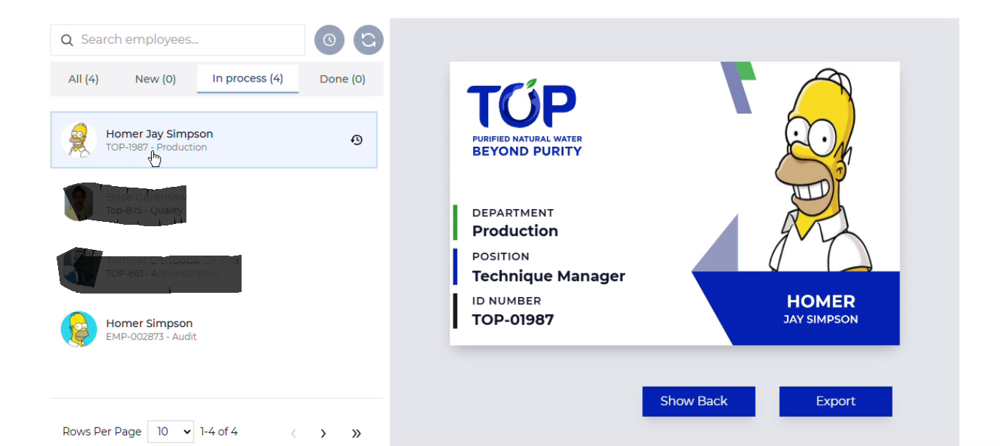

I'm Hanna Samuel, a multidisciplinary professional bridging QA Engineering, UI/UX Design, Full-Stack Development, and AI/ML Engineering — building reliable, well-tested systems for real businesses.
I see the full picture — from a single test case to a full ERP pipeline. Every decision considers quality, usability, and long-term maintainability.
I've built and shipped tools that real operations teams depend on daily — from factory biometric systems to finance reconciliation dashboards.
My QA background means I build with rigor. Every project goes through structured testing, careful edge-case handling, and clear documentation.
From ISTQB to 10 Academy's AI Mastering Training, I invest continuously in sharpening my craft across QA, design, development, and ML.
I'm a multidisciplinary professional based in Addis Ababa, Ethiopia, whose work spans QA engineering, UI/UX design, full-stack development, and AI/ML — with a BSc in Software Engineering from Bahir Dar University.
My unique value is the ability to hold multiple disciplines at once. As a QA Engineer at Top Link Technology, I tested and supported a large ERP system deployed across 15+ cities. As a Full-Stack Developer at Top Beverages Industries & Trading, I've built custom Odoo modules — including a biometric overtime engine and a real-time finance reconciliation dashboard — used daily by a 1,000+ employee organization across 6 sites.
I've also completed 10 Academy's AI Mastering Training, building machine learning models for financial inclusion forecasting, fraud detection, and customer experience analytics. This cross-disciplinary fluency — QA rigor, design sense, engineering depth, and ML curiosity — lets me deliver work that is both usable and genuinely reliable.
I care about understanding the reasoning behind every decision, especially when production systems and real people are on the other end of the work.
Four pillars. One integrated professional. Each discipline strengthens the others.
End-to-end QA that catches issues before users do. I write structured test cases, run full regression cycles, and manage defect tracking through resolution.
Human-centered design that translates real user needs into intuitive interfaces. From wireframes to interactive prototypes, built with a full understanding of the dev lifecycle behind them.
Internal tools and ERP extensions that solve real operational problems — from custom Odoo modules to finance dashboards and automation scripts.
Reliable ML systems for financial risk prediction and analytics — from data preprocessing and feature engineering to model evaluation and API deployment.
Real work. Real impact. Each project reflects my cross-disciplinary approach.
A custom Odoo 11 module for Top Beverages Industries & Trading (1,000+ employees, 6 sites) that parses raw biometric fingerprint logs into clean check-in/check-out data and automatically calculates overtime.
A machine learning model predicting financial inclusion trends using real-world Ethiopian datasets — from data cleaning and feature engineering to model training and evaluation, built during 10 Academy's AI Mastering Training.
Provided end-to-end QA for a large-scale ERP system built for the Ministry of Water and Energy, deployed across 15+ cities, covering HR, customer service, billing, and finance modules. Managed the full defect lifecycle in Jira and trained end-users on-site and remotely.

End-to-end pipeline fetching real-time employee data from Odoo to auto-generate print-ready ID cards, with a custom photo-editing UI built in React.
Real-time matching engine cross-referencing transactions across Odoo ERP, POS, and bank deposits to catch financial discrepancies automatically.
A Figma-designed library management system for registering books and students, tracking borrowing activity, and locating shelves without a librarian.
ML workflows for detecting fraud in e-commerce/bank transactions and identifying structural change points in Brent oil prices using Bayesian modeling.
A Telegram bot automating speed and direction controls, demonstrating hands-on automation and logical scripting.
Structured programs I've completed to keep growing across QA, design, development, and ML.
10 Academy's intensive program covering machine learning, data engineering, financial analytics, and MLOps — built through real fintech and energy-market projects.
A specialized training program on designing effective, learner-centered educational experiences and instructional content.
Internationally recognized certification covering software testing fundamentals, test design techniques, and quality management principles.
Built custom Odoo 11 modules for a 1,000+ employee organization across 6 sites — including a biometric overtime calculation & access-control engine, a real-time finance/ERP reconciliation dashboard, and an automated employee ID card generation system. Designed workflows in Figma and translated them into internal tools with HTML, CSS, JavaScript, and Python (Flask).
Built ML models for financial risk prediction and forecasting, performed data preprocessing and feature engineering on real-world fintech and energy-market datasets, and implemented model evaluation techniques including accuracy, precision, and ROC-AUC.
Provided QA and support for a Water Utility Management ERP system deployed for the Ministry of Water and Energy across 15+ cities. Designed test cases, executed end-to-end testing, managed defect tracking in Jira, trained end-users, and produced user manuals and instructional videos.
Designed intuitive interfaces for e-learning and gaming platforms aimed at children — including wireframes, prototypes, and illustrated graphics for teaching numbers, animals, fruits, and basic math concepts.
Whether it's a project, a training program, or just a conversation about Ethiopia's digital future — I'm here.